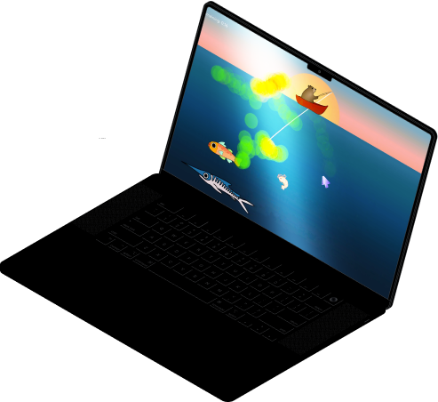
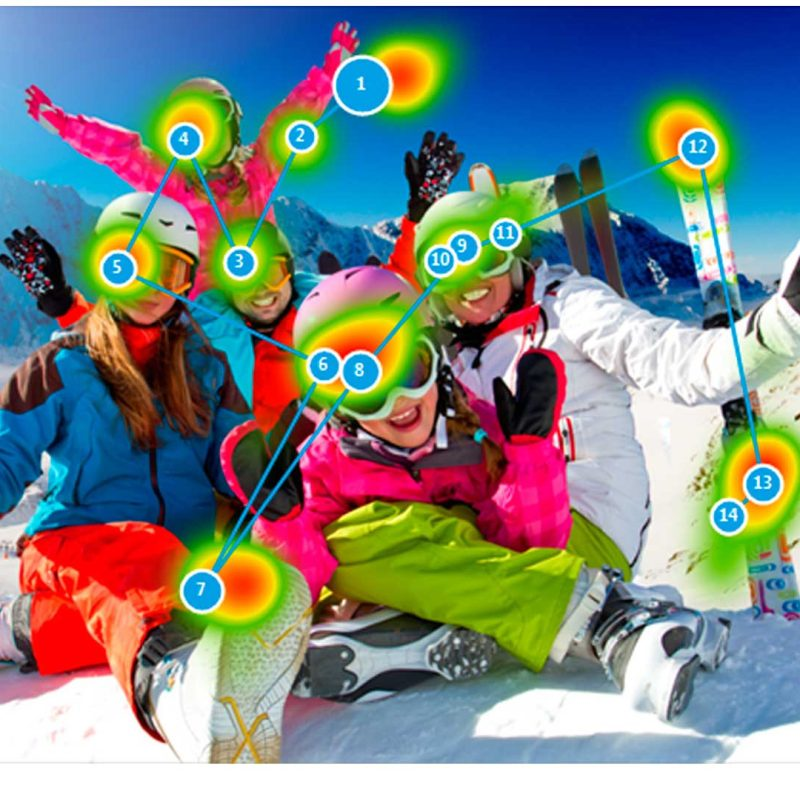
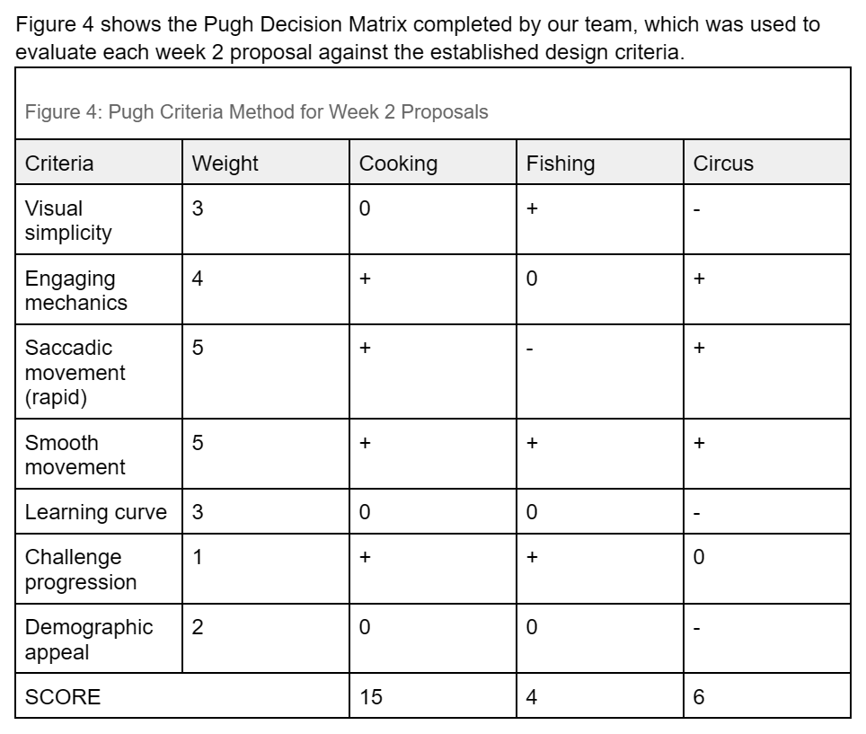
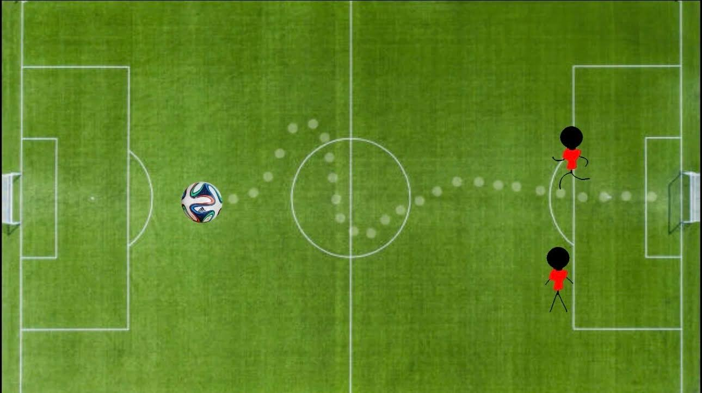
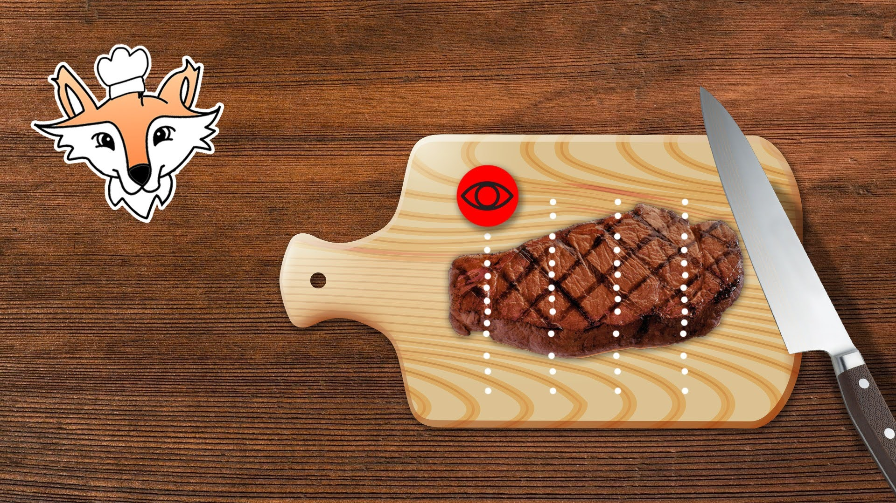
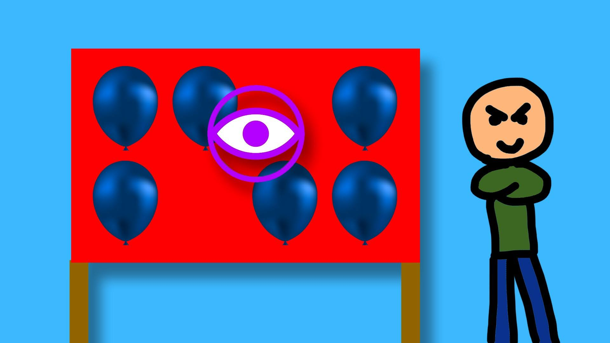
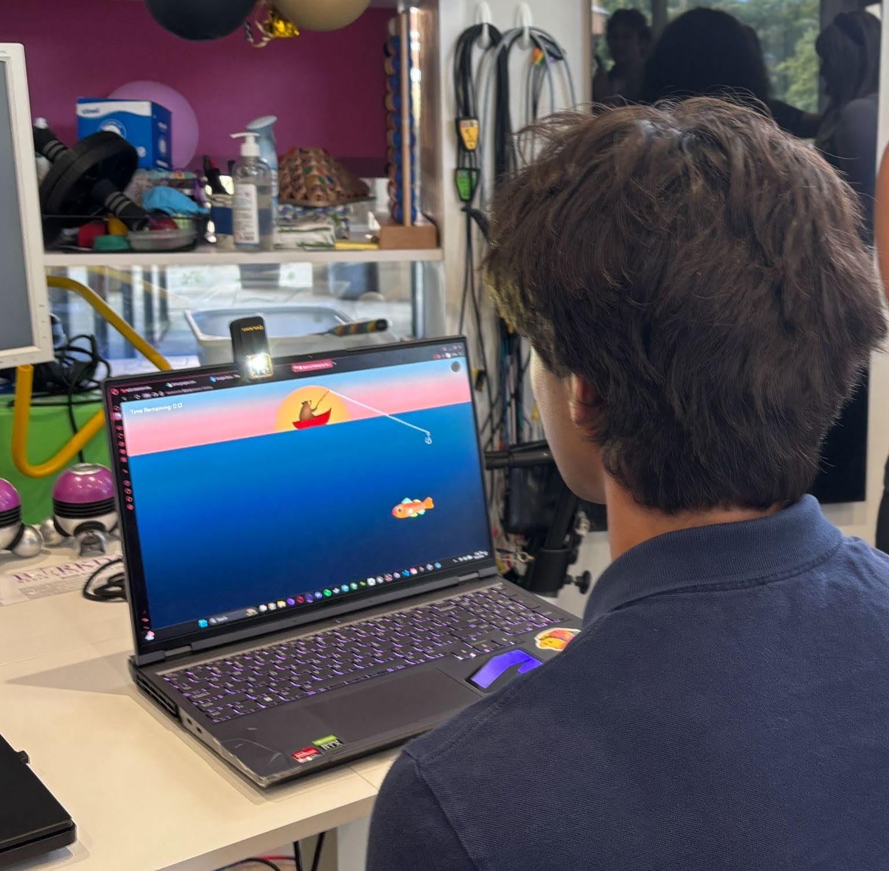
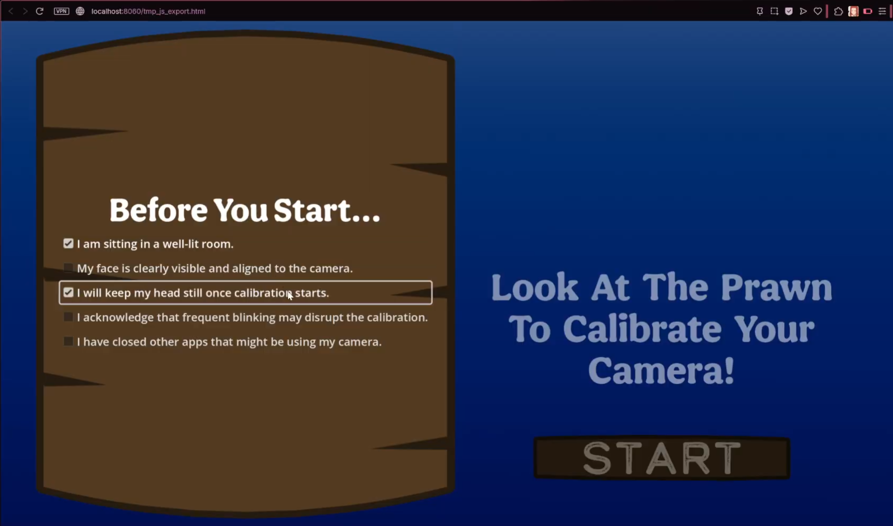
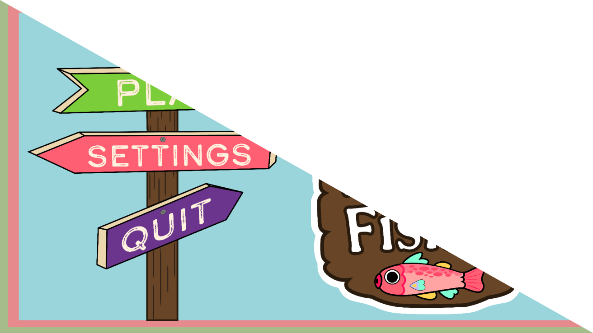
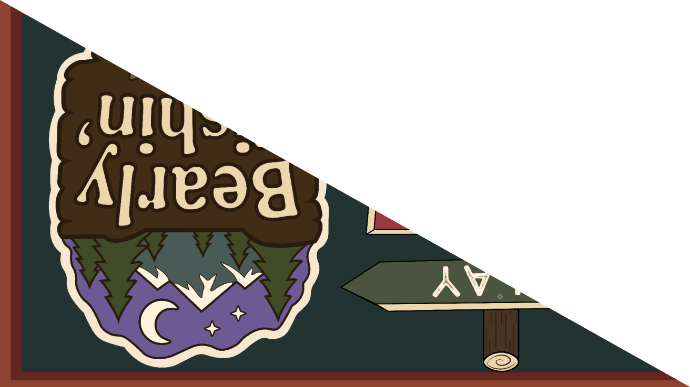

Attention is short. One young patient stayed engaged for only 30 seconds, and most of that engagement came from the therapist and parent, not the game.
Project Introduction
For one month in London, my team & I worked on a real client project for Birkdale Neuro Physio, a clinic that helps patients with neurological conditions.
Birkdale’s physios use Tobii eye-tracking equipment to train and evaluate patients’ eye movements, but that clinical-grade equipment is expensive, so patients can’t continue their exercises at home.
Our challenge was to build a free, accessible game that runs in a web browser on an ordinary webcam. It needed to keep patients motivated and give therapists useful feedback.
My role in this project was designer and game developer.
Software Used by Team
*AI used for programming support.


01 Research & Observation
We started by learning how eye tracking is used in rehab. Physios train two kinds of eye movement: smooth pursuit, which means following a slow-moving object, and saccades, which are quick jumps between two points.
We also conducted a competitive analysis on the current market for eye-tracking games and software, and found them to fall short when meeting our project goals of ease of use and accessible cost.
Before designing anything, we tried Birkdale’s Tobii games ourselves. The tracker was hypersensitive, and using our eyes as a controller felt strange, so we were glad the physios gave us clear instructions. It was a small taste of how a new patient might feel.
Before designing anything, we tried Birkdale’s Tobii games ourselves. The tracker was hypersensitive, and using our eyes as a controller felt strange, so we were glad the physios gave us clear instructions. It was a small taste of how a new patient might feel.
We also sat in on a couple of therapy sessions, and a few things stood out:
Distraction is part of therapy. Physios add distractions on purpose so patients practice refocusing.
Calibration changes from patient to patient, with fewer targets for children and more for adults.
Physios want progress feedback. We needed to consider many different end users, including physios and caretakers.
Styling matters. Some older patients feel the clinic’s existing games are childish, and many clinic games use black backgrounds to create high contrast.
Finding: Our first game ideas were too complicated. Watching real sessions showed us that simplicity matters most, and that a game can be simple while still keeping patients engaged. I learned that sitting in a real session can quickly overturn assumptions you spent a week building.
Process
- Each of us wrote insight statements from a patient’s or therapist’s point of view, then turned them into “How might we?” questions for an IDEO-style brainstorm. Dot voting left us with three game ideas: cooking, fishing, and a circus.
- We scored the ideas on a Pugh decision matrix, using criteria like visual simplicity, both eye movement types, and learning curve. We also asked students from other teams to score them, so our own bias wouldn’t steer the results.
- After observing patients, we added two more concepts in week three: a “follow the video” game & a soccer game. We built digital trailer-type prototypes of both and brought them to the physios. In the end, every concept except fishing was dropped.




Narrowing it Down
- Cooking needed too many steps for patients with limited cognitive ability.
- The circus theme had limited appeal and opportunity for miscommunication across US-UK cultural differences.
- Follow the video was too passive, since the physios wanted patients to think & interact.
- Soccer could get repetitive.
Finding: The matrix helped us compare ideas, but it never made the decision for us. Cooking and Follow Video each scored highest in a round, and client feedback still decided the Fishing outcome.

03 Prototyping & Playtesting
Fishing was simple, familiar, and easy to build on. You play as a fishing bear, and you catch fish by looking at them. Slow, drifting fish train smooth pursuit, while fast, darting fish train saccades.
I built the game in Godot and used WebGazer.js, a free, open-source library, for eye tracking. I also built the calibration flow, which turned out to be the hardest part of the whole project.
We ran three rounds of playtesting, and calibration got in the way almost every time.
In the first round, our tester couldn’t pass calibration, so they never reached the game at all. Their feedback was still valuable: they wanted clearer instructions, a reminder to keep their head still, and buttons that change color on hover. We added instruction screens before calibration and before play.
In rounds two & three, calibration got less accurate the longer it ran. Blinking made it worse, and the bottom points were the least accurate, since people naturally half-close their eyes when looking down. During play, fish entered from too many directions, and the shrimp moved too fast.
We made these changes:
- Shortened the calibration time to reduce fatigue.
- Raised the laptop to eye level, which improved the bottom points.
- Slowed the shrimp & simplified how fish enter the screen.
- Added a loading screen, so players know their input registered.
- Added a setup checklist for posture, lighting, and camera position.
- Let therapists choose 3, 5, or 9 calibration points to match each patient.
We also compared cameras, and the external webcam tracked more accurately than a built-in laptop camera because of its higher capture resolution.

Finding: Calibration was the biggest barrier for users, so we stopped treating it like a setup chore and designed it as part of the experience. I learned that a feature can work perfectly for me as the developer and still fail for a first-time user.
04 Designing for Accessibility


Every design choice needed a reason.
Contrast. Our first sea was light blue, and the light-colored fish got lost in it. We deepened the water and changed the sky to a sunset gradient, since blue and orange contrast strongly. That made the play area stand apart from the background.
Type. The font is bold, simple, & large, with careful spacing and capitalization so it’s easy to read.
Art style. We tested bright vs. muted colors and big vs. small eyes on the fish. We chose bright colors and big eyes, which were easier to see and let the fish show emotion. The bear mascot keeps the style friendly without feeling childish.
Sound. Physios wanted audio that doesn’t overwhelm. We chose background music with no lyrics or strong beat, so players can still hear the reel sound that signals a catch.
Distractions. Multiple types of fish at once forces the patient to choose a focus.
Difficulty. Players pick easy, medium, or hard.
No losing. The game ends when time runs out. We didn’t want to punish patients for a lower score.
05 Feedback for Physios
Physios asked for progress tracking, so the game shows an accuracy percentage and a heatmap of where the player looked, with red marking the longest fixations.
We also kept the gameplay consistent from round to round. That way, physios see real change over time, not change caused by the game’s mechanics. Above all else, we wanted the numbers to mean something to the people reading them.
06 Results & Reflection
We demoed the game live for Birkdale. The room turned out to be too dark for eye tracking, but a clip-on flashlight luckily saved the demo. The client liked that the game is free, runs in a browser, and needs no extra equipment, and they were most interested in the accuracy & heatmap feedback.
What’s still unsolved:
Calibration still has a margin of error because of limits in the open-source library.
WebGazer.js stopped receiving regular updates after February 24, 2026, so future work may need a different eye-tracking tool.
At the time of the demo, the game worked only on PC browsers, despite efforts to port to mobile.
Overall, I learned that watching real patients changed our design more than any matrix did, and that the best fix for a technical limit is often a design decision.